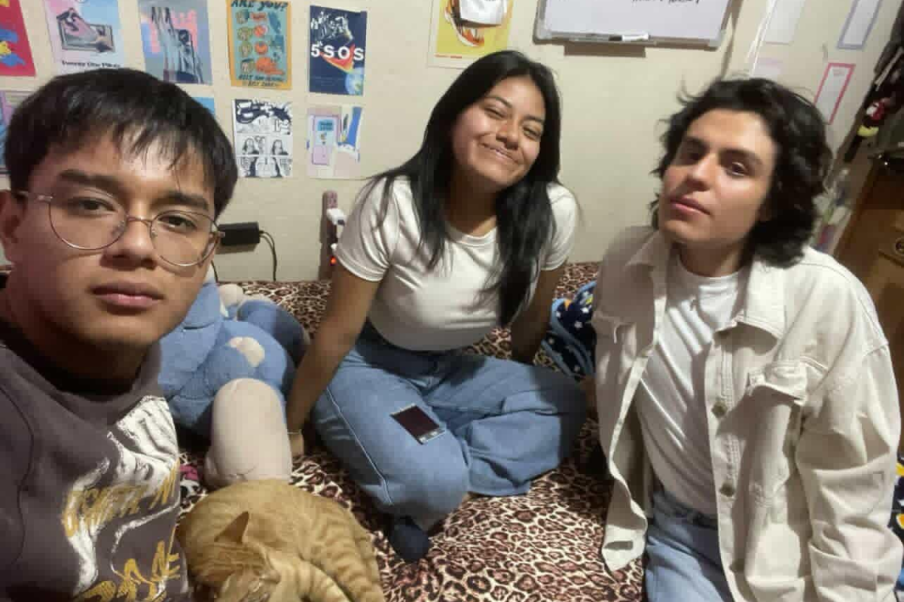
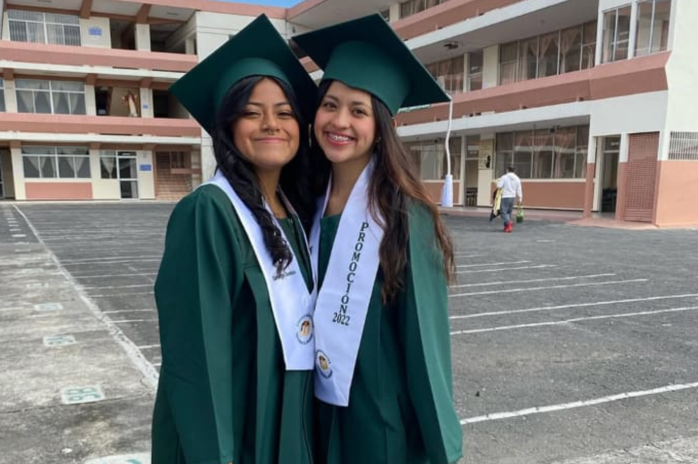
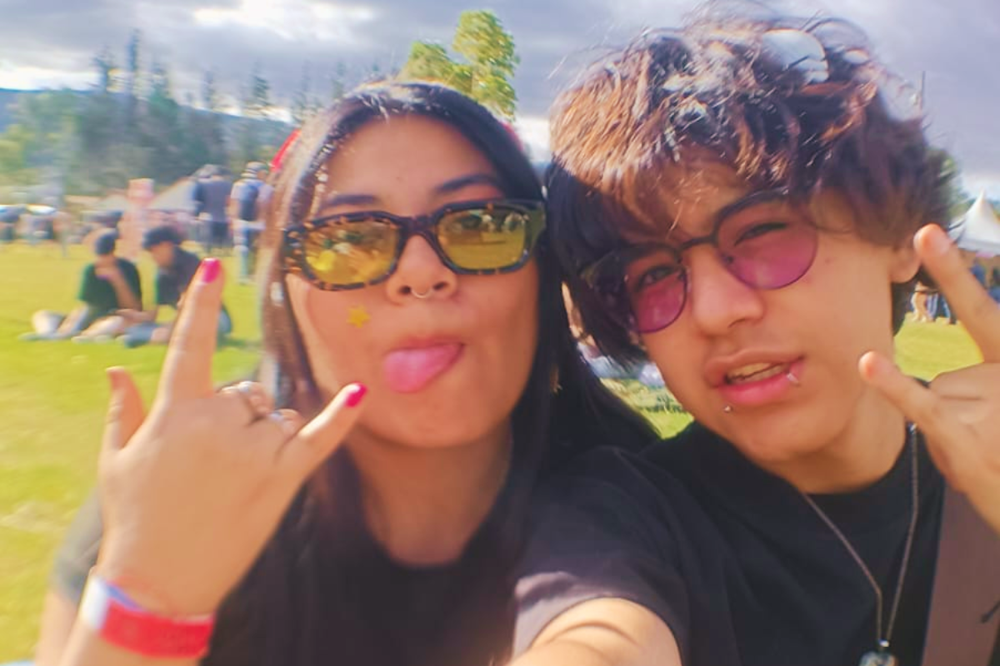
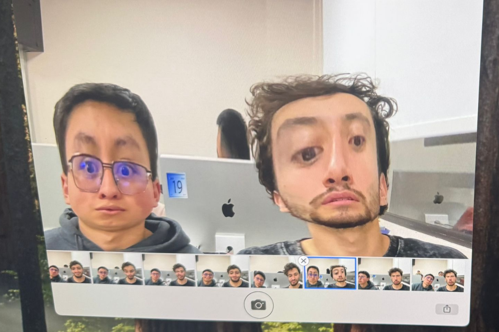

Mis amigos

Kuka
- Edad: 22 años
- Ocupación: Estudiante de Artes plásticas en la UCE
- Color favorito: Verde
Melanny Vivas a.k.a. Kuka...
Leer más
Melanny Vivas a.k.a. Kuka, es una de mis mejores amigas, por no decir la mejor, llevamos 10 años conociéndonos. Kuka siempre ha estado cuando la necesito, fuimos parte de todas nuestras etapas importantes, desde el primer amor, la primera ruptura de corazón, cambios de casas, idas al cine, fiestas, elegir una carrera, época otaku. Con la kuka puedo hablar de lo que sea cuando sea, ha sido uno de los mayores apoyos que la vida y Dios me pudo dar, si las almas gemelas existen, la kuka y yo estamos unidas. Compartimos muchos recuerdos felices en mi casa, en su casa, en conciertos , saliendo con un dólar o a veces con más, acompañandome a un viaje de ida y vuelta a Riobamba a matricularme , hacer deberes juntas, llorar juntas, estar lejos la una de la otra y aun así seguir queriendonos como nos queremos. Gracias kuka por mantenerme con vida.

Jossu
- Edad: 22 años
- Ocupación: Estudiante de Marketing Digital en el Instituto Cordillera, Trade en helados Kiko's
- Color favorito: Negro y lila
Jossué Castillo es una de esas amistades que se tardan en llegar...
Leer más
Jossué Castillo es una de esas amistades que se tardan en llegar, pero llegan y llegan con un mensaje para darte, yo digo que es un vocero de Dios, nos conocimos en primer semestre de la carrera, y aunque ya no estudiemos lo mismo, su amistad conmigo se ha fortalecido los últimos meses, ha sido junto con la Kuka uno de mis pilares y una de mis razones para seguir con vida. Cuando las personas suelen decir que hay pocos amigos valiosos, es verdad, el Jossu es uno de mis amigos valiosos y es alguien por quien yo iría a la guerra, si hace algo bien me alegraré toda la vida, si hace algo mal estaré para él, si le pasa algo malo tendré mi mano en su hombro y su nombre en mis oraciones. El Jossu me ha enseñado tanto sobre vivir y como la vida es linda en los últimos meses que gracias a él veo todo en perspectiva, si las cosas pasan por algo, es por algo, es el plan de Dios. Siempre le voy a estar agradecida por escucharme llorar innumerables veces, por ayudarme en mis momentos de crisis, por escucharme y por acompañarme por llamada hasta llegar a mi casa.

Sol
- Edad: 21 años
- Ocupación: Estudiante de Administración de empresas en la UPS, asistente de compras en Enkador
- Color favorito: Lila y gama de azul/celeste/ a veces turquesa pastel
Sol es una de mis amistades más duraderas...
Leer más
Solange Morales a.k.a. Sol, es una de mis amistades más duraderas, llevamos conociéndonos 14 años, incluso tenemos videos juntas cuando éramos niñas. Es denso pensar como ha pasado el tiempo y como nos hemos visto cambiar, a pesar de que últimamente no compartimos mucho por nuestros horarios o por nuestra disponibilidad, siempre su persona está en mis pensamientos, mi corazón y mis oraciones. Un recuerdo lindo que tengo con ella es sentarnos en los recreos a comer en el graderío del colegio frente a las canchas de basket y robarle su comida, aunque suene mal, pero su abuelita siempre le mandaba cosas full ricas y obvio yo siempre le remaba. Gracias Sol por estar en las buenas y en las horribles por darme tu compañía y tus consejos, aunque me duelan porque tu siempre me trataste como una figurita frágil.

Juan
- Edad: 21 años
- Ocupación: Estudiante de Bachelor of wildlife and conservation biology y ayudante en una panadería local
- Color favorito:Verde oliva, negro y rojo
A pesar de conocernos el mismo tiempo que con Sol, Juan y yo empezamos...
Leer más
A pesar de conocernos el mismo tiempo que con Sol, Juan y yo empezamos a ser amigos a los 13 años y con la insistencia de Melanny, en mi defensa Juan siempre fue un niño raro, pero con el paso del tiempo descubrí que tenemos los mismos gustos en algunos aspectos, y que viviera cerca del colegio era una ventaja para nosotros. Uno de mis recuerdos favoritos es ir a una feria de stickers con la Kuka y la Mona e ir en corredor, por alguna razón no se bajaron con nosotras y acto seguido vemos como mis amigos se van de largo y bueno esperamos que regresen en el de regreso, lo hicieron, compramos muchísimos stickers y posters, que hasta el día de hoy tengo en mi cuarto, y una pizza artesanal malísima. Juan es como mi otra mitad que se fue, ahora vive en Australia y viene de vez en cuando, llevo un año sin verle y me duele en toda el alma, ahora con su situación migratoria el panorama no es esperanzador, y el que venga se ve aún más lejos, no hay día en que no piense en él y como sería nuestra vida si estudiase con nosotros en Ecuador, tal vez siguieramos jugando Just Dance en su casa después de clases, pero tal vez no compartiríamos tatuajes a juego.

Mela
- Edad: 20 años
- Ocupación:Estudiante de Negocios Digitales
- Color favorito:Blanco y celeste
Mela es una de mis amistades más recientes...
Leer más
Melany Guañuna a.k.a. Mela, es una de mis amistades más recientes y es alguien con la que conecté muy rápido el primer día de clases, a pesar de tener diferentes edades (un año), pensamos casi igual en ciertas situaciones y por ella la universidad ha sido menos terrible y una experiencia que tal vez me gustaría repetir. Hemos pasado por malísimas, cosas de la u y cosas en nuestras vidas, y también por buenísimas como salir al cine o hablar de nuestros desastres amorosos.

Fran & Doriam
- Edad: 21 años
- Ocupación:Estudiantes de Bioquímica y Farmacia e Ingeniería Agropecuaria
- Color favorito:Rojo & Azul
Fran & Doriam vienen en conjunto...
Leer más
Al igual que con Kuka, Francisco Cevallos a.k.a. Fran y Doriam Godoy a.k.a Doriam o Dorito, son dos personas que entraron a mi vida hace casi diez años, cuando estábamos entrando a la secundaria, Doriam era de otro curso y Fran era el chico nuevo, antes las cosas eran chistosas porque Fran era casi de mi mismo tamaño pero con el tiempo y recientemente que nos volvimos a unir me pasa por al menos en 30 centímetros. Una cosa que nos unió es la música, nos gustan los mismos artistas independientes underground ecuatorianos y también mis problemas amorosos. Gracias Fran y Doriam por ser unos sapos chismosos y venir a mi casa cuando no quería estar sola.

Jami
- Edad: 22 años
- Ocupación: Estudiante de Química en la PUCE, bartender
- Color favorito: Azul y rosa pastel
Jamilé Reina y yo coincidimos a veces...
Leer más
Es chistoso porque antes de pasar por mi época rebelde yo era muy católica y formaba parte de grupos del colegio, uno de estos era la infancia misionera y también de los monaguillos, ahí fue cuando Jami y yo nos conocimos y hablamos por primera vez, somos todo lo contrario, a donde sea que vaya ella irradia luz y energía, es como un pequeño trompo giratorio, tiene ese poder de convencer a la gente de hablarle y de hacer lo que ella quiera, una de esas veces fue donar sangre, tal vez lo repetiría, pero ya no antes de clases. Fuimos a nuestras primeras fiestas juntas y también nos graduamos juntas, mi grupo del colegio de física era imparable, me atrevo a decir que fuimos el mejor grupo de todo tercero y por eso logramos exonerarnos de los exámenes de grado.

Arielito
- Edad: 20 años
- Ocupación: Estudiante de Negocios Digitales, Bajista
- Color favorito: Morado
Arielito y yo somos como un tarareo...
Leer más
Yo sé que lo del tarareo no se entiende mucho, pero ahora lo van a ver. El primer día de clases de la carrera y antes de hablar con Mela, estábamos sentados en la misma fila y ese día hubo un tour, la cosa es que Arielito era una de las pocas caras que parecían amables, así que decidí ir atrás de él. Siempre me he caracterizado por querer llevarme bien con todos y Ariel no era la excepción, me acuerdo que de nuestras primeras conversaciones era yo yendo a pedirle sus cosas de la cartuchera y más tarde Arielito se dio cuenta que me gustaba mucho la música alternativa por lo que me contó que comenzó a tararear canciones de las más conocidas para que hablemos, creo que una de las primeras era de Guardarraya y desde ahí comenzamos a hablar. Hemos ido a un concierto juntos y como somos cabeza de pollo con dos latas de biela ya estábamos en la nuestra. Tqm Arielito.

Mateo & Adriancito
- Edad: 20 - 22 años
- Ocupación: Estudiantes de Negocios Digitales
- Color favorito: Negro y Verde y morado
Nuestra relación es pastuza...
Leer más
Vamos de nuevo con lo que intento llevarme con todos, creo que es algo que me heredó mi papá, pero bueno, Adrián y Mateo vienen en combo así como Fran y Doriam, no sé cuando comenzamos a llevarnos tan bien, pero bueno, yo lo atribuyo a que a Adriancito y a mi nos gustan los mismos artistas, visitamos los mismos lugares y pensamos similar, también Adrián es un sí a todo casi seguro, me acompañó a comprar la medicina de la Lupe y vino a comer hamburguesas conmigo cuando me dejaron sola y triste, pero esa es otra historia. Y bueno con Mateo comenzamos a hablar cuando nos tocó el mismo lugar en las prácticas comunitarias, asi que bueno, la convivencia nos hizo unirnos, aunque no parezca, yo te quiero y te aprecio mucho Cabrerita.